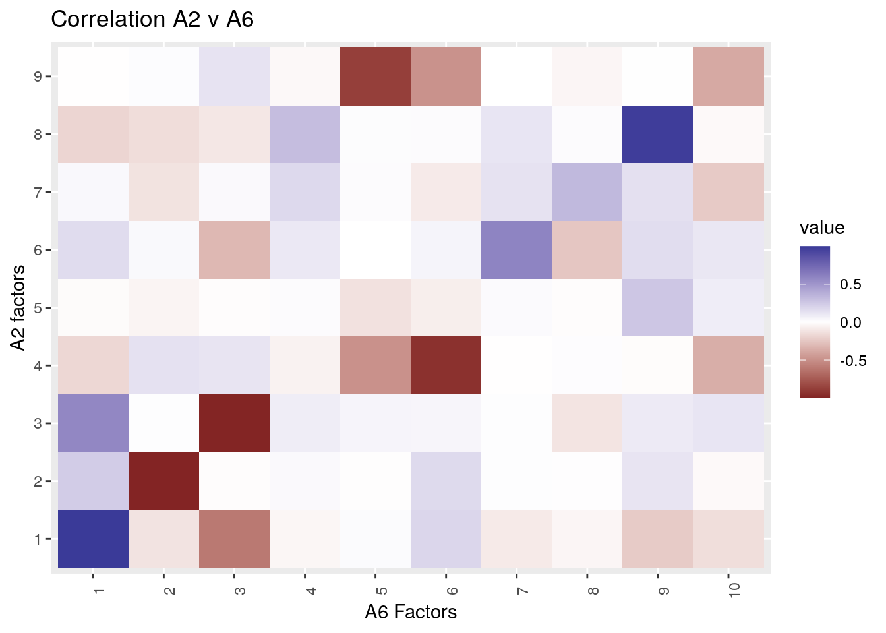
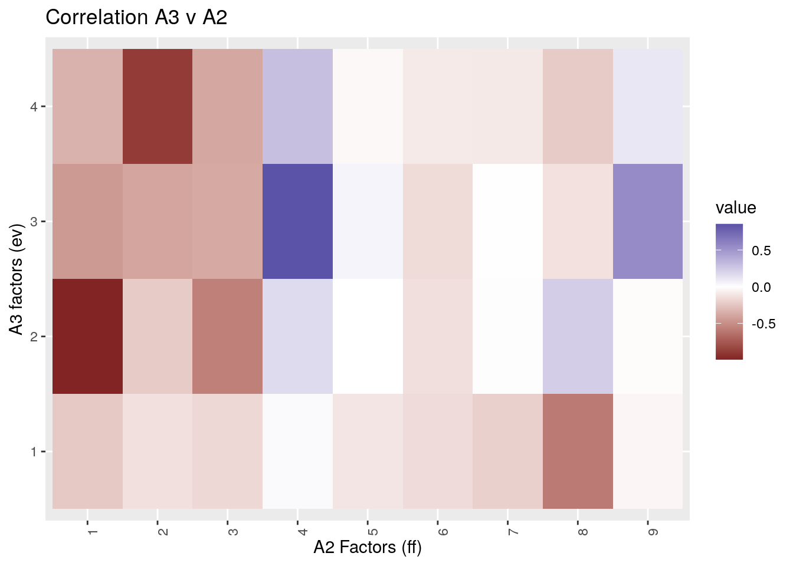
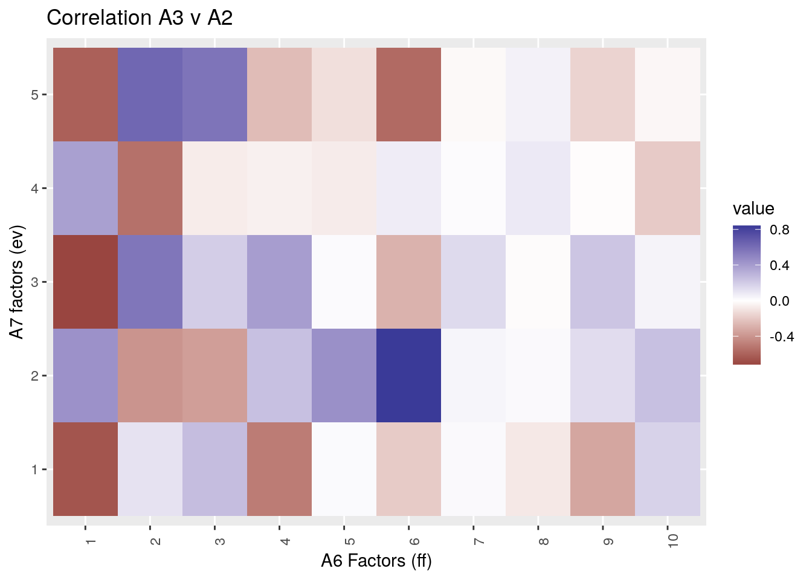
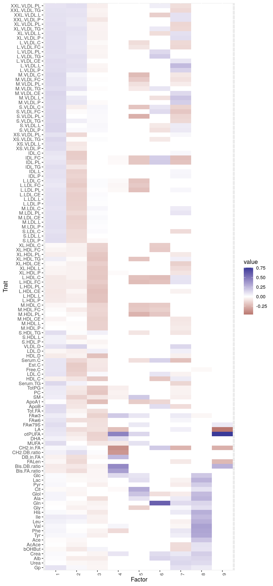

First analysis of metobolite data
Jean Morrison
2020-10-12
Last updated: 2020-10-20
Checks: 7 0
Knit directory: sumstatFactors/
This reproducible R Markdown analysis was created with workflowr (version 1.6.2). The Checks tab describes the reproducibility checks that were applied when the results were created. The Past versions tab lists the development history.
Great! Since the R Markdown file has been committed to the Git repository, you know the exact version of the code that produced these results.
Great job! The global environment was empty. Objects defined in the global environment can affect the analysis in your R Markdown file in unknown ways. For reproduciblity it’s best to always run the code in an empty environment.
The command set.seed(20190819) was run prior to running the code in the R Markdown file. Setting a seed ensures that any results that rely on randomness, e.g. subsampling or permutations, are reproducible.
Great job! Recording the operating system, R version, and package versions is critical for reproducibility.
Nice! There were no cached chunks for this analysis, so you can be confident that you successfully produced the results during this run.
Great job! Using relative paths to the files within your workflowr project makes it easier to run your code on other machines.
Great! You are using Git for version control. Tracking code development and connecting the code version to the results is critical for reproducibility.
The results in this page were generated with repository version f2f0178. See the Past versions tab to see a history of the changes made to the R Markdown and HTML files.
Note that you need to be careful to ensure that all relevant files for the analysis have been committed to Git prior to generating the results (you can use wflow_publish or wflow_git_commit). workflowr only checks the R Markdown file, but you know if there are other scripts or data files that it depends on. Below is the status of the Git repository when the results were generated:
Ignored files:
Ignored: .Rhistory
Ignored: .Rproj.user/
Ignored: analysis/figure/
Ignored: analysis/fixed_factors2_cache/
Ignored: analysis/fixed_factors_cache/
Ignored: analysis/metabo_flash_experiments_cache/
Ignored: analysis/pathway_factors_cache/
Ignored: analysis/simulations_cache/
Ignored: analysis/z_scores_cache/
Ignored: analysis_data/2020-06-10_ai/
Ignored: analysis_data/2020-10-02_metabolites/
Ignored: analysis_data/simple_patterns/
Ignored: analysis_data/sims_medium_k/
Untracked files:
Untracked: R/fit_ff2.R
Untracked: analysis/sample_corr2.Rmd
Untracked: buttons.css
Untracked: bw_factors2.png
Untracked: code/hide_output.js
Untracked: k99_analysis.R
Untracked: k99_fit.RDS
Untracked: matrix_20.png
Unstaged changes:
Modified: R/fit_ff.R
Modified: analysis/k_greater_than_n.Rmd
Note that any generated files, e.g. HTML, png, CSS, etc., are not included in this status report because it is ok for generated content to have uncommitted changes.
These are the previous versions of the repository in which changes were made to the R Markdown (analysis/2020-10-02_metabolites.Rmd) and HTML (public/2020-10-02_metabolites.html) files. If you’ve configured a remote Git repository (see ?wflow_git_remote), click on the hyperlinks in the table below to view the files as they were in that past version.
| File | Version | Author | Date | Message |
|---|---|---|---|---|
| Rmd | f2f0178 | Jean Morrison | 2020-10-20 | wflow_publish(“analysis/2020-10-02_metabolites.Rmd”) |
| html | c7126d8 | Jean Morrison | 2020-10-13 | Build site. |
| Rmd | c18d9ee | Jean Morrison | 2020-10-13 | wflow_publish(c(“analysis/index.Rmd”, “analysis/2020-10-02_metabolites.Rmd”)) |
Introduction
Kettunen et al. (2016) describe GWAS results for 123 metabolites. These data are an appealing target for our method because we expect many of these metabolites to be co-regulated. A good number are different sizes and types of lipid particles which likely share a lot of biology. In this document I will use the abbreviations used in the paper. The full names of all the metabolites are in the supplement of Kettunen et al. (2016) on page 161.
Data features
These data are from am meta-analysis of 14 primarily European ancestry cohorts with a maximum sample size of 24,925 individual. Although there are a large number of variants present for all traits (about 12 million) the sample size differs across SNPs within traits. The sample size difference is sometimes large because a particular SNP may be missing for an entire study. This poses a challenge if we are using normalized effect sizes (z-score divided by square root of sample size) because it means the covariance of rows of \(E\) (see other pages for notation and review of model) will differ across SNPs. This is a problem for the eigenvector and fixed factor methods of accounting for sample overlap. This data set is also challenging because it is large. One of the things I learned trying to fit this data set is that fitting the fixed factor method for larger number of traits can take prohibitively long.
Results
Normalized Effect Size
I fit the data using three methods – without correction for sample overlap (“plain”), using the eigenvector transformation (“ev”), and using fixed factors (“ff”). This document describes only results for SNPs with no missing data.
Running ev and ff methods
As noted above, we can’t simply apply either the eigenvector method or the fixed factor method because the sample size differs across SNPs but within traits. In order to apply these methods, I tried to identify a set of SNPs with close to similar sample size within trait and which were present in other studies.
For each trait I identified all SNPs with sample size withing 2,000 of the largest sample size for that trait. Effect estimates for all other SNPs were set to zero. For retained SNPs, I artificially assigned the sample size to be the average of the sample size for retained SNPs. I then kept only SNPs that were non-missing after this procedure across all traits.
I arrived at this procedure after some trial and error. At first I tried keeping only SNPs within a sample size window of the mode sample size for each trait, however this yielded a smaller set of SNPs after keeping only those non-missing across traits.
I ran both the ev and ff methods using an estimate of \(R\) based on the \(p\)-thresholding method described in simulations using a threshold of \(p > 0.2\).
Comparing Results
Eight analyses are described in the table below. The \(p\)-threshold column indicates another way of filtering SNPs. When \(p\)-threshold is less than 1, FLASH is run only on SNPs that have a \(p\)-value less than the specified threshold for at least one trait. This is another way to reduce the number of SNPs used in the analysis. All three methods were run with both a \(p\)-threshold of 1 and 0.01.
I ran the “plain” method in two ways. In analyses A1 and A5, the method is run using all available SNPs (after LD pruning). In analyses A4 and A8, the method is run using only the SNPs that were available to the ev and ff methods. This can help us evaluate how much the difference in results is attributable to different methods vs different SNP sets.
| Number | Method | Number of traits non-missing | \(p\)-threshold | total SNPs | factors |
|---|---|---|---|---|---|
| A1 | plain | 123 | 1 | 352,752 | 13 |
| A2 | ff | 123 | 1 | 7,662 | 9 |
| A3 | ev | 123 | 1 | 7,662 | 4 |
| A4 | plain | 123 | 1 | 7,662 | 12 |
| A5 | plain | 123 | 0.01 | 124,652 | 15 |
| A6 | ff | 123 | 0.01 | 2,912 | 10 |
| A7 | ev | 123 | 0.01 | 2,912 | 5 |
| A8 | plain | 123 | 0.01 | 2,912 | 12 |
Plain method on large vs small SNP sets
Comparing anlaysis 1 and analysis 4, most of the factors recovered by analysis A4 have a strong correlation with a factor recovered by analysis 1. Eight of the twelve factors discovered by A4 match a factor discovered by A1 according to the definition givin here. Three additional factors match with correlations between 0.7 and 0.9 and one factor does not match.
I observed similar results comparing A5 and A8 with 9 factors discovered in A8 matching factors discovered in A5 at a threshold of 0.9 and the remaining three matching with correlations of 0.65, 0.68, and 0.81.
From this I conclude that the significantly smaller SNP set used by ff and ev nevertheless contains similar information about patterns of pleiotropy to the larger SNP set.
I also saw very strong matching between analyses using different \(p\)-thresholds. Factors discovered by A1 and A5 match nearly entirely as do those discovered by A4 and A8.
For the remainder I will focus on comparing the ev and ff methods with different SNP sets.
Comparing A2, A3, A6, A7
One clear observation is that the ff method yields more factors than the ev methods. One question is if some of these are singel trait factors, since we observed in simulations that the ff method tends to produce more single trait factors than the ev method.
Comparing A2 and A6: Here I plot the correlation between A6 factors and A2 factors.
library(sumstatFactors)Warning: replacing previous import 'intervals::reduce' by 'purrr::reduce' when
loading 'sumstatFactors'library(ggplot2)
A2 <- readRDS("analysis_data/2020-10-02_metabolites/A2.RDS")
A6 <- readRDS("analysis_data/2020-10-02_metabolites/A6.RDS")
plot_factors(cor(A2$F_hat, A6$F_hat)) + xlab("A6 Factors") + ylab("A2 factors") + ggtitle("Correlation A2 v A6")
| Version | Author | Date |
|---|---|---|
| c7126d8 | Jean Morrison | 2020-10-13 |
disc(F_hat = A6$F_hat, F_true = A2$F_hat, lambda=0)$M
est_ix true_ix value
1 1 1 0.9975677
2 2 2 0.9963093
3 3 3 0.9952395
4 5 9 0.8788961
5 6 4 0.9438391
6 7 6 0.5951068
7 8 7 0.3313569
8 9 8 0.9785538
$u_est
[1] 4 10
$u_true
[1] 5
$single_trait_est
[1] 7Five factors match with a correlation > 0.9 and an additional factor matches with correlation 0.88. Three factors estimated by A2 and four factors estimated by A6 don’t match factors estimated by the other. Here I am making use of the disc function written for evaluating simulation results. The only single trait factor identified by disc is A6 factor 7.
Comparing A3 and A7:
A3 <- readRDS("analysis_data/2020-10-02_metabolites/A3.RDS")
A7 <- readRDS("analysis_data/2020-10-02_metabolites/A7.RDS")
plot_factors(cor(A3$F_hat, A7$F_hat)) + xlab("A7 Factors") + ylab("A3 factors") + ggtitle("Correlation A3 v A7")
| Version | Author | Date |
|---|---|---|
| c7126d8 | Jean Morrison | 2020-10-13 |
disc(F_hat = A7$F_hat, F_true = A3$F_hat, lambda=0)$M
est_ix true_ix value
1 1 1 0.8629873
2 2 3 0.9981892
3 3 2 0.7576515
4 5 4 0.8723440
$u_est
[1] 4
$u_true
integer(0)
$single_trait_est
integer(0)A3 and A7 only match moderately well. Factor 2 of A7 matches factor 3 of A3 nearly exactly. The other factors all have matches with correlations between 0.75 and 0.9.
Comparing ff and ev methods A2 vs A3:
plot_factors(cor(A3$F_hat, A2$F_hat)) + xlab("A2 Factors (ff)") + ylab("A3 factors (ev)") + ggtitle("Correlation A3 v A2")
| Version | Author | Date |
|---|---|---|
| c7126d8 | Jean Morrison | 2020-10-13 |
disc(F_hat = A3$F_hat, F_true = A2$F_hat, lambda=0)$M
est_ix true_ix value
1 1 8 0.5984437
2 2 1 0.9925383
3 3 4 0.8534390
4 4 2 0.8886404
$u_est
integer(0)
$u_true
[1] 3 5 6 7 9
$single_trait_est
integer(0)All four of the factors estimated with the ev method have a match among those estimated by the ff method though A3 factor 1 matches A2 factor 8 with a correlation of only 0.6.
Comparing ff and ev methods A6 vs A7:
plot_factors(cor(A7$F_hat, A6$F_hat)) + xlab("A6 Factors (ff)") + ylab("A7 factors (ev)") + ggtitle("Correlation A3 v A2")
| Version | Author | Date |
|---|---|---|
| c7126d8 | Jean Morrison | 2020-10-13 |
disc(F_hat = A7$F_hat, F_true = A6$F_hat, lambda=0)$M
est_ix true_ix value
1 2 6 0.8415358
2 3 1 0.7173161
3 5 2 0.6318862
$u_est
[1] 1 4
$u_true
[1] 3 4 5 7 8 9 10
$single_trait_est
integer(0)A6 and A7 match less well than A2 and A3. The highest correlation amongst any pair is 0.84.
Examining factors of A2
I will focus on the factors estimated by A2. I chose this analysis to focus on because the ff method performed best in simulations. The results above indicate that the smaller number of SNPs available to A6 might make that analysis unreliable. Of the five factors estimated by A2, factors 1,2,4, and 8 are well matched by factors estimated using the ev method (A3) and factors 1,2,3,4,8, and 9 are matched well by the ff method using fewer SNPs (A6).
Here I have ordered the traits in the same order as Figure 2 of Kettunen et al. (2016).
library(stringr)
names <- str_replace(A2$names, "kettunen_", "") %>% str_replace(".est", "")
to <- c("Gp", "Urea", "Alb", "Crea", "bOHBut", "AcAce",
"Ace", "Tyr", "Phe", "Val", "Leu", "Ile", "His",
"Gly", "Gln", "Ala", "Glol", "Cit", "Pyr", "Lac",
"Glc", "Bis.FA.ratio", "Bis.DB.ratio", "FALen",
"DB.in.FA", "CH2.DB.ratio", "CH2.in.FA", "MUFA",
"DHA", "otPUFA", "LA", "FAw79S", "FAw6", "FAw3", "Tot.FA",
"ApoB", "ApoA1", "SM", "PC", "TotPG", "Serum.TG",
"HDL.C", "LDL.C", "Free.C", "Est.C", "Serum.C",
"HDL.D", "LDL.D", "VLDL.D", "S.HDL.P", "S.HDL.L", "S.HDL.TG",
"M.HDL.P", "M.HDL.L", "M.HDL.CE", "M.HDL.PL", "M.HDL.FC", "M.HDL.C",
"L.HDL.P", "L.HDL.L", "L.HDL.CE", "L.HDL.PL", "L.HDL.FC", "L.HDL.C",
"XL.HDL.P", "XL.HDL.L", "XL.HDL.CE","XL.HDL.TG", "XL.HDL.PL", "XL.HDL.FC", "XL.HDL.C",
"S.LDL.P", "S.LDL.L", "S.LDL.C",
"M.LDL.P", "M.LDL.L", "M.LDL.CE", "M.LDL.PL", "M.LDL.C",
"L.LDL.P", "L.LDL.L", "L.LDL.CE", "L.LDL.PL", "L.LDL.FC", "L.LDL.C",
"IDL.P", "IDL.L", "IDL.TG", "IDL.PL", "IDL.FC", "IDL.C",
"XS.VLDL.P", "XS.VLDL.L", "XS.VLDL.TG", "XS.VLDL.PL",
"S.VLDL.P", "S.VLDL.L", "S.VLDL.TG", "S.VLDL.PL", "S.VLDL.FC", "S.VLDL.C",
"M.VLDL.P", "M.VLDL.L","M.VLDL.CE", "M.VLDL.TG", "M.VLDL.PL", "M.VLDL.FC", "M.VLDL.C",
"L.VLDL.P", "L.VLDL.L","L.VLDL.CE", "L.VLDL.TG", "L.VLDL.PL", "L.VLDL.FC", "L.VLDL.C",
"XL.VLDL.P", "XL.VLDL.L", "XL.VLDL.TG", "XL.VLDL.PL",
"XXL.VLDL.P", "XXL.VLDL.L", "XXL.VLDL.TG", "XXL.VLDL.PL")
trait_order <- match(to, names)
plot_factors(A2$F_hat, names, trait_order = trait_order)
| Version | Author | Date |
|---|---|---|
| c7126d8 | Jean Morrison | 2020-10-13 |
I will leave interpretation of these for now but will come back and add to this section. One thing that I think is interesting is that factor 2 seems to be broadly correlated with the Lp(a) pattern identified by Kettunen et al. (2016) in Figure 2 at least in terms of effect signs.
SNP associations with A2 Factors
I estimated SNP association with each of the factors estimated by A2 using the following procedure. Let \(\hat{F}\) be the estimated factors. Let \(\tilde{B}\) and \(\tilde{S}\) be the normalized effect estimates and normalized effect estimate sds for a new set of SNPs that we would like to evaluate (each are snps by traits). Then we estimate the matrix of SNP associations with factors, \(\tilde{L}\) as
\[ \tilde{L}^\top = (\hat{F}^\top \hat{F})^{-1} \hat{F}^\top \tilde{B}^\top \]
The variance of a row of \(\tilde{L}\) is computed as
L_est_se <- map(seq(n_var), function(i){ V <- H%% diag(S2_tilde[i,] + 1/tau) %% t(H) sqrt(diag(V)) })
\[ Var(\tilde{L}_{j, \bullet}) = (\hat{F}^\top \hat{F})^{-1} \hat{F}^\top \Sigma_{j} \hat{F} (\hat{F}^\top \hat{F})^{-1} \] where \(\Sigma_j\) is a diagonal matrix with elements \(\tilde{S}_{j, \bullet}^2 + \gamma^2\) where \(\gamma^2\) is the trait length vector of residual variance. One option for \(\gamma^2\) is the variance of columns of \(\Theta\) computed by FLASH, however these are shrunk and give anticonservative estimates. Instead I estimate \(\gamma^2\) by simply taking the sample variance of columns of \(\tilde{B}_{fit} - \hat{B}_{fit}\) where \(\tilde{B}_{fit}\) is the matrix of estimates used to fit the model and \(\hat{B}_{fit}\) is the fitted values from the model.
Since each factor is associated with many traits, there are more variants associated with factors than with individual traits. I will highlight the results for Factor 2 from A2 which I pointed out above. The original data have 12 million SNPs. In order to be able to plot them, I have truncated \(p\)-values and \(10^{-300}\) and am only plotting SNPs with \(p\)-values less than \(10^{-6}\).
library(qqman)For example usage please run: vignette('qqman')Citation appreciated but not required:Turner, S.D. qqman: an R package for visualizing GWAS results using Q-Q and manhattan plots. biorXiv DOI: 10.1101/005165 (2014).P <- readRDS("analysis_data/2020-10-02_metabolites/A2_estL_P2.RDS")
qqman::manhattan(P, chr="seqnames", bp="start", p = "p2")Warning in qqman::manhattan(P, chr = "seqnames", bp = "start", p = "p2"): No SNP
column found. OK unless you're trying to highlight.
| Version | Author | Date |
|---|---|---|
| c7126d8 | Jean Morrison | 2020-10-13 |
It is worth noting that there are an enormous number of SNPs with low \(p\)-values. This could be explained by the factor being associated with so many traits or the \(p\)-values could be poorly calibrated. The SNP examined by Kettunen et al. (2016) has a \(p\)-value of \(10^{-88}\) for Factor 2 and is visible on chromosome 6.
The “genomic inflation factor” defined as the median \(\chi^2\) statistic for a factor divided by the median of the \(\chi^2_1\) distribution for each factor:
P <- readRDS("analysis_data/2020-10-02_metabolites/A2_estL.RDS")
C2 <- qchisq(as.matrix(P[1:100,paste0("p", 1:9)]), 1, lower.tail=F)
apply(C2, 2, median)/qchisq(0.5, 1) p1 p2 p3 p4 p5 p6 p7 p8
9.3012602 6.4027785 0.9735924 3.7855867 0.2106090 0.1894637 0.2053953 1.9754651
p9
0.4724463 These values are quite large for the first factors and then substantially less than 1 for factors 5, 6, 7, and 9. Overall, these results don’t look like typical GWAS results.
I will add more details about other variants in the future.
\(z\)-scores
To avoid issues caused by using standardized effects, I also looked at a few analyses using \(z\)-scores. I will add notes on these soon.
| Number | Method | Number of traits non-missing | \(p\)-threshold | total SNPs | Note |
|---|---|---|---|---|---|
| B1 | plain | 123 | 1 | ||
| B2 | ff | 123 | 1 | Took too long, no results | |
| B3 | ev | 123 | 1 | ||
| B4 | plain | 123 | 0.01 | ||
| B5 | ff | 123 | 0.01 | Took too long, no results | |
| B6 | ev | 123 | 0.01 |
References
Kettunen, Johannes, Ayse Demirkan, Peter Würtz, Harmen H. M. Draisma, Toomas Haller, Rajesh Rawal, Anika Vaarhorst, et al. 2016. “Genome-wide study for circulating metabolites identifies 62 loci and reveals novel systemic effects of LPA.” Nature Communications 7: 1–9. https://doi.org/10.1038/ncomms11122.
sessionInfo()R version 4.0.3 (2020-10-10)
Platform: x86_64-pc-linux-gnu (64-bit)
Running under: Ubuntu 18.04.5 LTS
Matrix products: default
BLAS: /usr/lib/x86_64-linux-gnu/openblas/libblas.so.3
LAPACK: /usr/lib/x86_64-linux-gnu/libopenblasp-r0.2.20.so
locale:
[1] LC_CTYPE=en_US.UTF-8 LC_NUMERIC=C
[3] LC_TIME=en_US.UTF-8 LC_COLLATE=en_US.UTF-8
[5] LC_MONETARY=en_US.UTF-8 LC_MESSAGES=en_US.UTF-8
[7] LC_PAPER=en_US.UTF-8 LC_NAME=C
[9] LC_ADDRESS=C LC_TELEPHONE=C
[11] LC_MEASUREMENT=en_US.UTF-8 LC_IDENTIFICATION=C
attached base packages:
[1] stats graphics grDevices utils datasets methods base
other attached packages:
[1] qqman_0.1.4 stringr_1.4.0
[3] ggplot2_3.3.2 sumstatFactors_0.0.0.9000
[5] workflowr_1.6.2
loaded via a namespace (and not attached):
[1] tidyselect_1.1.0 xfun_0.18 ashr_2.2-47 purrr_0.3.4
[5] reshape2_1.4.4 lattice_0.20-41 colorspace_1.4-1 vctrs_0.3.4
[9] generics_0.0.2 htmltools_0.5.0 yaml_2.2.1 rlang_0.4.7
[13] mixsqp_0.3-43 later_1.1.0.1 pillar_1.4.6 glue_1.4.2
[17] withr_2.3.0 calibrate_1.7.7 lifecycle_0.2.0 plyr_1.8.6
[21] munsell_0.5.0 gtable_0.3.0 flashier_0.2.4 evaluate_0.14
[25] labeling_0.3 knitr_1.30 httpuv_1.5.4 invgamma_1.1
[29] irlba_2.3.3 parallel_4.0.3 Rcpp_1.0.5 readr_1.3.1
[33] promises_1.1.1 backports_1.1.10 scales_1.1.1 truncnorm_1.0-8
[37] farver_2.0.3 fs_1.5.0 hms_0.5.3 digest_0.6.25
[41] stringi_1.5.3 dplyr_1.0.2 ebnm_0.1-24 rprojroot_1.3-2
[45] grid_4.0.3 tools_4.0.3 magrittr_1.5 tibble_3.0.3
[49] crayon_1.3.4 whisker_0.4 pkgconfig_2.0.3 MASS_7.3-53
[53] ellipsis_0.3.1 Matrix_1.2-18 SQUAREM_2020.3 rmarkdown_2.3
[57] rstudioapi_0.11 R6_2.4.1 intervals_0.15.2 git2r_0.27.1
[61] compiler_4.0.3